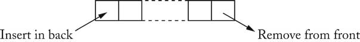
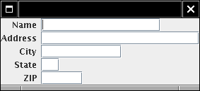

Object-Oriented Design & Patterns
Cay S. Horstmann
Chapter 5
Patterns and GUI Programming

Chapter Topics
- Iterators
- The Pattern Concept
- The OBSERVER Pattern
- Layout Managers and the STRATEGY Pattern
- Components, Containers, and the COMPOSITE Pattern
- Scroll Bars and the DECORATOR Pattern
- How to Recognize Patterns
- Putting Patterns to Work
List Iterators
LinkedList<String> list = . . .;
ListIterator<String> iterator = list.listIterator();
while (iterator.hasNext())
{
String current = iterator.next();
. . .
}
Classical List Data Structure
High-Level View of Data Structures
- Queue

- Array with random access

- List
???
List with Cursor

for (list.reset(); list.hasNext(); list.next())
{
Object x = list.get();
. . .
}
- Disadvantage: Only one cursor per list
- Iterator is superior concept
The Pattern Concept
- History: Architectural Patterns
- Christopher Alexander
- Each pattern has
- a short name
- a brief description of the context
- a lengthy description of the problem
- a prescription for the solution
Short Passages Pattern

Short Passages Pattern
Context
"...Long, sterile corridors set the scene for everything bad about
modern
architecture..."
Problem
a lengthy description of the problem, including
- a depressing picture
- issues of light and furniture
- research about patient anxiety in hospitals
- research that suggests that corridors over 50 ft are considered
uncomfortable
Short Passages Pattern
Solution
Keep passages short. Make them as much like rooms as possible, with
carpets
or wood on the floor, furniture, bookshelves, beautiful windows. Make
them
generous in shape and always give them plenty of light; the best
corridors
and passages of all are those which have windows along an entire wall.

Iterator Pattern
Context
- An aggregate object contains element objects
- Clients need access to the element objects
- The aggregate object should not expose its internal structure
- Multiple clients may want independent access
Iterator Pattern
Solution
- Define an iterator that fetches one element at a time
- Each iterator object keeps track of the position of the next
element
- If there are several aggregate/iterator variations, it is best if
the aggregate and iterator classes realize common interface types.
Iterator Pattern

Iterator Pattern
- Names in pattern are examples
- Names differ in each occurrence of pattern
Name in
Design Pattern
|
Actual Name
(linked lists)
|
Aggregate
|
List
|
ConcreteAggregate
|
LinkedList
|
Iterator
|
ListIterator
|
ConcreteIterator
|
anonymous class implementing ListIterator
|
createIterator()
|
listIterator()
|
next()
|
next()
|
isDone()
|
opposite of hasNext()
|
currentItem()
|
return value of hasNext()
|
Model/View/Controller
- Some programs have multiple editable views
- Example: HTML Editor
- WYSIWYG view
- structure view
- source view
- Editing one view updates the other
- Updates seem instantaneous
Model/View/Controller

Model/View/Controller
- Model: data structure, no visual representation
- Views: visual representations
- Controllers: user interaction
Model/View/Controller
- Views/controllers update model
- Model tells views that data has changed
- Views redraw themselves
Model/View/Controller

Observer Pattern
- Model notifies views when something interesting happens
- Button notifies action listeners when something interesting
happens
- Views attach themselves to model in order to be notified
- Action listeners attach themselves to button in order to be
notified
- Generalize: Observers attach themselves to subject
Observer Pattern
Context
- An object, called the subject, is source of events
- One or more observer objects want to be notified when such an
event occurs.
Solution
- Define an observer interface type. All concrete observers
implement it.
- The subject maintains a collection of observers.
- The subject supplies methods for attaching and detaching
observers.
- Whenever an event occurs, the subject notifies all observers.
Observer Pattern

Names in Observer Pattern
Name in Design Pattern
|
Actual Name (Swing buttons)
|
Subject
|
JButton
|
Observer
|
ActionListener
|
ConcreteObserver
|
the class that implements the ActionListener
interface type
|
attach()
|
addActionListener()
|
| notify() |
actionPerformed()
|
Layout Managers
- User interfaces made up of components
- Components placed in containers
- Container needs to arrange components
- Swing doesn't use hard-coded pixel coordinates
- Advantages:
- Can switch "look and feel"
- Can internationalize strings
- Layout manager controls arrangement
Layout Managers
- FlowLayout: left to right, start new row when full
- BoxLayout: left to right or top to bottom
- BorderLayout: 5 areas, Center, North, South, East, West
- GridLayout: grid, all components have same size
- GridBagLayout: complex, like HTML table
Layout Managers

Layout Managers
- Set layout manager
JPanel keyPanel = new JPanel();
keyPanel.setLayout(new GridLayout(4, 3));
- Add components
for (int i = 0; i < 12; i++)
keyPanel.add(button[i]);
Layout Managers
Voice Mail System GUI
- Same backend as text-based system
- Only Telephone class changes
- Buttons for keypad
- Text areas for microphone, speaker
Voice Mail System GUI


Voice Mail System GUI
Voice Mail System GUI
- Panel with BorderLayout for speaker
JPanel speakerPanel = new JPanel();
speakerPanel.setLayout(new BorderLayout());
speakerPanel.add(new JLabel("Speaker:"), BorderLayout.NORTH);
speakerField = new JTextArea(10, 25);
speakerPanel.add(speakerField, BorderLayout.CENTER);

Voice Mail System GUI

Custom Layout Manager
- Form layout
- Odd-numbered components right aligned
- Even-numbered components left aligned
- Implement LayoutManager interface type

The LayoutManager Interface Type
public interface LayoutManager
{
void layoutContainer(Container parent);
Dimension minimumLayoutSize(Container parent);
Dimension preferredLayoutSize(Container parent);
void addLayoutComponent(String name, Component comp);
void removeLayoutComponent(Component comp);
}
Form Layout
Strategy Pattern
Strategy Pattern
Context
- A class can benefit from different variants for an algorithm
- Clients sometimes want to replace standard algorithms with custom
versions
Solution
- Define an interface type that is an abstraction for the algorithm
- Actual strategy classes realize this interface type.
- Clients can supply strategy objects
- Whenever the algorithm needs to be executed, the context class
calls the appropriate methods of the strategy object
Strategy Pattern

Strategy Pattern: Layout Management
Name in
Design Pattern
|
Actual Name
(layout management)
|
Context
|
Container
|
Strategy
|
LayoutManager
|
ConcreteStrategy
|
a layout manager such as BorderLayout
|
doWork()
|
a method such as layoutContainer
|
Strategy Pattern: Sorting
Name in
Design Pattern
|
Actual Name
(sorting)
|
Context
|
Collections
|
Strategy
|
Comparator
|
ConcreteStrategy
|
a class that implements Comparator
|
doWork()
|
compare
|
Containers and Components
- Containers collect GUI components
- Sometimes, want to add a container to another container
- Container should be a component
- Composite design pattern
- Composite method typically invoke component methods
- E.g. Container.getPreferredSize invokes getPreferredSize
of components
Composite Pattern
Context
- Primitive objects can be combined to composite objects
- Clients treat a composite object as a primitive object
Solution
- Define an interface type that is an abstraction for the primitive
objects
- Composite object collects primitive objects
- Composite and primitive classes implement same interface type.
- When implementing a method from the interface type, the composite
class applies the method to its primitive objects and combines the
results
Composite Pattern
Composite Pattern
Name in
Design Pattern
|
Actual Name
(AWT components)
|
Primitive
|
Component
|
Composite
|
Container
|
Leaf
|
a component without children
(e.g. JButton)
|
method()
|
a method of Component
(e.g. getPreferredSize)
|
Scroll Bars

Scroll Bars
Decorator Pattern
Context
- Component objects can be decorated (visually or behaviorally
enhanced)
- The decorated object can be used in the same way as the
undecorated object
- The component class does not want to take on the responsibility
of the decoration
- There may be an open-ended set of possible decorations
Decorator Pattern
Solution
- Define an interface type that is an abstraction for the component
- Concrete component classes realize this interface type.
- Decorator classes also realize this interface type.
- A decorator object manages the component object that it decorates
- When implementing a method from the component interface type, the
decorator class applies the method to the decorated component and
combines the result with the effect of the decoration.
Decorator Pattern

Decorator Pattern: Scroll Bars
Name in
Design Pattern
|
Actual Name
(scroll bars)
|
| Component |
Component
|
| ConcreteComponent |
JTextArea |
| Decorator |
JScrollPane |
method()
|
a method of Component
(e.g. paint)
|
Streams
InputStreamReader reader = new InputStreamReader(System.in);
BufferedReader console = new BufferedReader(reader);
- BufferedReader takes a Reader and adds
buffering
- Result is another Reader: Decorator pattern
- Many other decorators in stream library, e.g. PrintWriter
Decorator Pattern: Input Streams
Name in
Design Pattern
|
Actual Name
(input streams)
|
| Component |
Reader |
| ConcreteComponent |
InputStreamReader |
| Decorator |
BufferedReader |
method()
|
read |
How to Recognize Patterns
- Look at the intent of the pattern
- E.g. COMPOSITE has different intent than DECORATOR
- Remember common uses (e.g. STRATEGY
for layout managers)
- Not everything that is strategic is an example of STRATEGY
pattern
- Use context and solution as "litmus test"
Litmus Test

Litmus Test
- Component objects can be decorated (visually or behaviorally
enhanced)
PASS
- The decorated object can be used in the same way as the
undecorated object
PASS
- The component class does not want to take on the responsibility
of the decoration
FAIL--the component class has setBorder method
- There may be an open-ended set of possible decorations
Putting Patterns to Work
Bundles
- Bundle = set of related items with description+price
- E.g. stereo system with tuner, amplifier, CD player + speakers
- A bundle has line items
- A bundle is a line item
- COMPOSITE pattern
- Ch5/invoice/Bundle.java
(look at getPrice)
Bundles

Discounted Items
- Store may give discount for an item
- Discounted item is again an item
- DECORATOR pattern
- Ch5/invoice/DiscountedItem.java
(look at getPrice)
- Alternative design: add discount to LineItem
Discounted Items

Model/View Separation
- GUI has commands to add items to invoice
- GUI displays invoice
- Decouple input from display
- Display wants to know when invoice is modified
- Display doesn't care which command modified invoice
- OBSERVER pattern
Change Listeners
- Use standard ChangeListener interface type
public interface ChangeListener
{
void stateChanged(ChangeEvent event);
}
- Invoice collects ArrayList of change listeners
- When the invoice changes, it notifies all listeners:
ChangeEvent event = new ChangeEvent(this);
for (ChangeListener listener : listeners)
listener.stateChanged(event);
Change Listeners
Observing the Invoice

Iterating Through Invoice Items
- Invoice collect line items
- Clients need to iterate over line items
- Don't want to expose ArrayList
- May change (e.g. if storing invoices in database)
- ITERATOR pattern
Iterators
- Use standard Iterator interface type
public interface Iterator<LineItem>
{
boolean hasNext();
LineItem next();
void remove();
}
- remove is "optional operation" (see ch. 8)
- implement to throw UnsupportedException
- implement hasNext/next manually to show inner workings
- Ch5/invoice/Invoice.java
Iterators
Formatting Invoices
- Simple format: dump into text area
- May not be good enough,
- E.g. HTML tags for display in browser
- Want to allow for multiple formatting algorithms
- STRATEGY pattern
Formatting Invoices
Formatting Invoices
Formatting Invoices